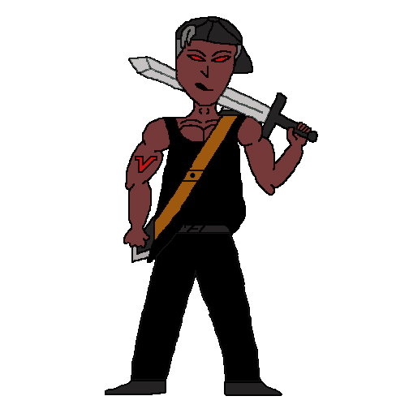

Name: Spike
Age: 32
Sex: Male
Status: Villain
Height: 6'0"
Home: Planet Earth
The first to try and take over the earth. Spike though was human, but he gave himself shots to give him great powers. He has a deep hatred for Big Dog, for he was defeated by him when they were younger. He plains to kill Big Dog and whomever is close to him, and then take over the earth and become ultimate ruler.